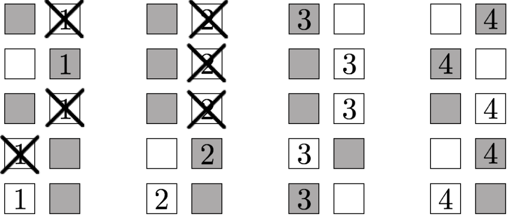

A representation of our traitor tracing algorithm built on top of threshold broadcast
encryption. This tracing algorithm plays a crucial role in constructing the first
traitor tracing scheme from pairings with O(N1/3) sized parameters,
overcoming a quadratic barrier that had stood for almost 15 years. We subsequently
improved this bound to the optimal O(1). See
 and
. and
.
| Software watermarking protects against software piracy by embedding a "mark" into a program that cannot be removed without destroying the functionality of the program. A prominent example is traitor tracing, where the program being marked is a decryption functionality. There are a number of fundamental questions in watermarking/traitor tracing: achieving security against colluding users, attaining the shortest possible paramater sizes, embedding arbitrary information into the mark, ensuring honest users' embedded information remains private, and maintaining security in the presence of quantum adversaries, to name a few. |
Impersonating Quantum Secrets over Classical Channels
|
| ||||||||
|
We show that a simple eavesdropper listening in on classical communication between
potentially entangled quantum parties will eventually be able to impersonate any of
the parties. Furthermore, the attack is efficient if one-way puzzles do not exist. As
a direct consequence, one-way puzzles are implied by reusable authentication schemes
over classical channels with quantum pre-shared secrets that are potentially evolving.
As an additional application, we show that any quantum money scheme that can be verified through only classical queries to any oracle cannot be information-theoretically secure. This significantly generalizes the prior work by Ananth, Hu, and Yuen (ASIACRYPT'23) where they showed the same but only for the specific case of random oracles. Therefore, verifying black-box constructions of quantum money inherently requires coherently evaluating the underlying cryptographic tools, which may be difficult for near-term quantum devices.
@misc{EPRINT:QiaZha26,
author = {Luowen Qian and Mark Zhandry}, title = {Impersonating Quantum Secrets over Classical Channels}, howpublished = {Cryptology {ePrint} Archive, Paper 2026/005}, year = {2026}, url = {https://eprint.iacr.org/2026/005} } | |||||||||
Optimal Threshold Traitor Tracing
|
| ||||||||
|
Threshold encryption distributes decryption capability across parties such that any
of them can jointly decrypt a ciphertext, while smaller coalitions learn nothing.
However, once or more parties collude, traditional threshold schemes provide no
accountability: a coalition of or more parties can pool its keys into a pirate
decoder that enables unrestricted decryption, all without any risk of being exposed.
To address this, Boneh, Partap, and Rotem [CRYPTO`24] introduced threshold traitor
tracing (TTT), which equips threshold encryption with traceability. Yet, all known TTT
schemes either suffer from parameter sizes growing with at least n1/3, or
rely on indistinguishability obfuscation to achieve optimal parameters.
In this paper, we present the first TTT schemes with optimal parameters, where public keys, secret keys, and ciphertexts are all bounded by poly(λ,log n), built solely from standard cryptographic tools and assumptions. Our first construction relies on the decisional Bilinear Diffie–Hellman (DBDH) assumption in prime order bilinear groups. Our second construction, based on the Learning with Errors (LWE) assumption, is plausibly post-quantum secure, and supports ramp-thresholds where decryption requires a larger coalition than those tolerated by security. Both of our constructions provide traceability against coalitions of arbitrary sizes. To achieve these results, we introduce a new primitive, Attribute-Based Threshold Encryption (ABTE), which generalizes both threshold and attribute-based encryption. We then combine ABTE with Mixed Functional Encryption through a new compiler to obtain our TTT schemes. We believe ABTE is a powerful primitive that may have independent applications beyond optimal TTT.
@misc{EPRINT:DDPSZ25,
author = {Sourave Das and Pratish Datta and Aditi Partap and Swagata Sasmal and Mark Zhandry}, title = {Optimal Threshold Traitor Tracing}, howpublished = {Cryptology {ePrint} Archive, Paper 2025/2154}, year = {2025}, url = {https://eprint.iacr.org/2025/2154} } | |||||||||
Optimal Traitor Tracing from Pairings
|
|

| |||||||
|
We use pairings over elliptic curves to give a collusion-resistant traitor tracing
scheme where the sizes of public keys, secret keys, and ciphertexts are independent
of the number of users. Prior constructions from pairings had size
Ω(N1/3). An additional consequence of our techniques is general
result showing that attribute-based encryption for circuits generically implies
optimal traitor tracing.
@inproceedgins{EC:Zhandry25a,
author = {Mark Zhandry}, title = {Optimal Traitor Tracing from Pairings}, booktitle = {EUROCRYPT 2025}, year = {2025} } | |||||||||
Composability in Watermarking Schemes
|
| ||||||||
|
Software watermarking allows for embedding a mark into a piece of code, such that any
attempt to remove the mark will render the code useless. Provably secure watermarking
schemes currently seems limited to programs computing various cryptographic
operations, such as evaluating pseudorandom functions (PRFs), signing messages, or
decrypting ciphertexts (the latter often going by the name "traitor tracing").
Moreover, each of these watermarking schemes has an ad-hoc construction of its own.
We observe, however, that many cryptographic objects are used as building blocks in larger protocols. We ask: just as we can compose building blocks to obtain larger protocols, can we compose watermarking schemes for the building blocks to obtain watermarking schemes for the larger protocols? We give an affirmative answer to this question, by precisely formulating a set of requirements that allow for composing watermarking schemes. We use our formulation to derive a number of applications.
@inproceedings{TCC:LiuZha24,
author = {Jiahui Liu and Mark Zhandry}, booktitle = {TCC~2024, Part~III}, editor = {Elette Boyle and Mohammad Mahmoody}, month = dec, pages = {400--430}, publisher = {Springer, Cham}, series = {{LNCS}}, title = {Composability in Watermarking Schemes}, volume = {15366}, year = {2024} } | |||||||||
Tracing Quantum State Distinguishers via Backtracking
|
|
|

| ||||||
|
We show the following results:
• The post-quantum equivalence of indisitnguishability obfuscation and differing inputs obfuscation in the restricted setting where the outputs differ on at most a polynomial number of points. Our result handles the case where the auxiliary input may contain a quantum state; previous results could only handle classical auxiliary input. • Bounded collusion traitor tracing from general public key encryption, where the decoder is allowed to contain a quantum state. The parameters of the scheme grow polynomially in the collusion bound. • Collusion-resistant traitor tracing with constant-size ciphertexts from general public key encryption, again for quantum state decoders. The public key and secret keys grow polynomially in the number of users. • Traitor tracing with embedded identities in the keys, again for quantum state decoders, under a variety of different assumptions with different parameter size trade-offs. Traitor tracing and differing inputs obfuscation with quantum decoders / auxiliary input arises naturally when considering the post-quantum security of these primitives. We obtain our results by abstracting out a core algorithmic model, which we call the Back One Step (BOS) model. We prove a general theorem, reducing many quantum results including ours to designing \emph{classical} algorithms in the BOS model. We then provide simple algorithms for the particular instances studied in this work.
@inproceedings{C:Zhandry23,
author = {Mark Zhandry}, booktitle = {CRYPTO~2023, Part~V}, editor = {Helena Handschuh and Anna Lysyanskaya}, month = aug, pages = {3--36}, publisher = {Springer, Cham}, series = {{LNCS}}, title = {Tracing Quantum State Distinguishers via Backtracking}, volume = {14085}, year = {2023} } | |||||||||
White Box Traitor Tracing
|
|
|
| ||||||
|
Traitor tracing aims to identify the source of leaked decryption keys. Since the
"traitor" can try to hide their key within obfuscated code in order to evade tracing,
the tracing algorithm should work for general, potentially obfuscated, decoder
programs. In the setting of such general decoder programs, prior work uses
black box tracing: the tracing algorithm ignores the implementation of the
decoder, and instead traces just by making queries to the decoder and observing the
outputs.
We observe that, in some settings, such black box tracing leads to consistency and user privacy issues. On the other hand, these issues do not appear inherent to white box tracing, where the tracing algorithm actually inspects the decoder implementation. We therefore develop new white box traitor tracing schemes providing consistency and/or privacy. Our schemes can be instantiated under various assumptions ranging from public key encryption and NIZKs to indistinguishability obfuscation, with different trade-offs. To the best of our knowledge, ours is the first work to consider white box tracing in the general decoder setting.
@inproceedings{C:Zhandry21,
author = {Mark Zhandry}, booktitle = {CRYPTO~2021, Part~IV}, editor = {Tal Malkin and Chris Peikert}, month = aug, pages = {303--333}, publisher = {Springer, Heidelberg}, series = {{LNCS}}, title = {White Box Traitor Tracing}, volume = {12828}, year = {2021} } | |||||||||
Schrödinger's Pirate: How To Trace a Quantum Decoder
|
|
|
| ||||||
|
We explore the problem of traitor tracing where the pirate decoder can contain a
quantum state. Our main results include:
• We show how to overcome numerous definitional challenges to give a meaningful notion of tracing for quantum decoders • We give negative results, demonstrating barriers to adapting classical tracing algorithms to the quantum decoder setting. • On the other hand, we show how to trace quantum decoders in the setting of (public key) private linear broadcast encryption, capturing a common approach to traitor tracing.
@inproceedings{TCC:Zhandry20,
author = {Mark Zhandry}, booktitle = {TCC~2020, Part~III}, editor = {Rafael Pass and Krzysztof Pietrzak}, month = nov, pages = {61--91}, publisher = {Springer, Heidelberg}, series = {{LNCS}}, title = {{Schr{\"o}dinger}'s Pirate: How to Trace a Quantum Decoder}, volume = {12552}, year = {2020} } | |||||||||
New Techniques for Traitor Tracing: Size N⅓ and More from Pairings
|
|
|
| ||||||
|
The best existing pairing-based traitor tracing schemes have O(√N)-sized
parameters, which has stood since 2006. This intuitively seems to be consistent with
the fact that pairings allow for degree-2 computations, yielding a quadratic
compression.
In this work, we show that this intuition is false by building a tracing scheme from pairings with O(∛N)-sized parameters. We additionally give schemes with a variety of parameter size trade-offs, including a scheme with constant-size ciphertexts and public keys (but linear-sized secret keys). All of our schemes make black-box use of the pairings. We obtain our schemes by developing a number of new traitor tracing techniques, giving the first significant parameter improvements in pairings-based traitor tracing in over a decade.
@inproceedings{C:Zhandry20,
author = {Mark Zhandry}, booktitle = {CRYPTO~2020, Part~I}, editor = {Daniele Micciancio and Thomas Ristenpart}, month = aug, pages = {652--682}, publisher = {Springer, Heidelberg}, series = {{LNCS}}, title = {New Techniques for Traitor Tracing: Size {$N^{1/3}$} and More from Pairings}, volume = {12170}, year = {2020} } | |||||||||
Strong Hardness of Privacy from Weak Traitor Tracing
|
| ||||||||
|
Despite much study, the computational complexity of differential privacy remains
poorly understood. In this paper we consider the computational complexity of
accurately answering a family Q of statistical queries over a data
universe X under differential privacy. A statistical query on a dataset
D∈Xn asks "what fraction of the elements of D satisfy a given
predicate p on X?" Dwork et al. (STOC'09) and Boneh and Zhandry (CRYPTO'14) showed
that if both Q and X are of polynomial size, then there is an efficient differentially
private algorithm that accurately answers all the queries, and if both Q and X are
exponential size, then under a plausible assumption, no efficient algorithm exists.
We show that, under the same assumption, if either the number of queries or the data universe is of exponential size, then there is no differentially private algorithm that answers all the queries. Specifically, we prove that if one-way functions and indistinguishability obfuscation exist, then: • For every n, there is a family Q of O(n7) queries on a data universe X of size 2d such that no poly(n,d) time differentially private algorithm takes a dataset D∈Xn and outputs accurate answers to every query in Q. •For every n, there is a family Q of 2d queries on a data universe X of size O(n7) such that no poly(n,d) time differentially private algorithm takes a dataset D∈Xn and outputs accurate answers to every query in Q. In both cases, the result is nearly quantitatively tight, since there is an efficient differentially private algorithm that answers Ω(n2) queries on an exponential size data universe, and one that answers exponentially many queries on a data universe of size Ω(n2). Our proofs build on the connection between hardness results in differential privacy and traitor-tracing schemes (Dwork et al., STOC'09; Ullman, STOC'13). We prove our hardness result for a polynomial size query set (resp., data universe) by showing that they follow from the existence of a special type of traitor-tracing scheme with very short ciphertexts (resp., secret keys), but very weak security guarantees, and then constructing such a scheme.
@inproceedings{TCC:KMUZ16,
author = {Lucas Kowalczyk and Tal Malkin and Jonathan Ullman and Mark Zhandry}, booktitle = {TCC~2016-B, Part~I}, editor = {Martin Hirt and Adam D. Smith}, month = oct # {~/~} # nov, pages = {659--689}, publisher = {Springer, Heidelberg}, series = {{LNCS}}, title = {Strong Hardness of Privacy from Weak Traitor Tracing}, volume = {9985}, year = {2016} } | |||||||||
Anonymous Traitor Tracing: How to Embed Arbitrary Information in a Key
|
| ||||||||
|
In a traitor tracing scheme, each user is given a different decryption key. A content
distributor can encrypt digital content using a public encryption key and each user in
the system can decrypt it using her decryption key. Even if a coalition of users
combines their decryption keys and constructs some "pirate decoder" that is capable of
decrypting the content, there is a public tracing algorithm that is guaranteed to
recover the identity of at least one of the users in the coalition given black-box
access to such decoder.
In prior solutions, the users are indexed by numbers 1,…,N and the tracing algorithm recovers the index i of a user in a coalition. Such solutions implicitly require the content distributor to keep a record that associates each index i with the actual identifying information for the corresponding user (e.g., name, address, etc.) in order to ensure accountability. In this work, we construct traitor tracing schemes where all of the identifying information about the user can be embedded directly into the user's key and recovered by the tracing algorithm. In particular, the content distributor does not need to separately store any records about the users of the system, and honest users can even remain anonymous to the content distributor. The main technical difficulty comes in designing tracing algorithms that can handle an exponentially large universe of possible identities, rather than just a polynomial set of indices i∈[N]. We solve this by abstracting out an interesting algorithmic problem that has surprising connections with seemingly unrelated areas in cryptography. We also extend our solution to a full "broadcast-trace-and-revoke" scheme in which the traced users can subsequently be revoked from the system. Depending on parameters, some of our schemes can be based only on the existence of public-key encryption while others rely on indistinguishability obfuscation.
@inproceedings{EC:NisWicZha16,
author = {Ryo Nishimaki and Daniel Wichs and Mark Zhandry}, booktitle = {EUROCRYPT~2016, Part~II}, editor = {Marc Fischlin and Jean-S{\'{e}}bastien Coron}, month = may, pages = {388--419}, publisher = {Springer, Heidelberg}, series = {{LNCS}}, title = {Anonymous Traitor Tracing: How to Embed Arbitrary Information in a Key}, volume = {9666}, year = {2016} } | |||||||||
Multiparty Key Exchange, Efficient Traitor Tracing, and More from Indistinguishability Obfuscation
|
|
| |||||||
|
In this work, we show how to use indistinguishability obfuscation (iO) to build
multiparty key exchange, efficient broadcast encryption, and efficient traitor
tracing. Our schemes enjoy several interesting properties that have not been
achievable before:
• Our multiparty non-interactive key exchange protocol does not require a trusted setup. Moreover, the size of the published value from each user is independent of the total number of users. • Our broadcast encryption schemes support distributed setup, where users choose their own secret keys rather than be given secret keys by a trusted entity. The broadcast ciphertext size is independent of the number of users. • Our traitor tracing system is fully collusion resistant with short ciphertexts, secret keys, and public key. Ciphertext size is logarithmic in the number of users and secret key size is independent of the number of users. Our public key size is polylogarithmic in the number of users. The recent functional encryption system of Garg, Gentry, Halevi, Raykova, Sahai, and Waters also leads to a traitor tracing scheme with similar ciphertext and secret key size, but the construction in this paper is simpler and more direct. These constructions resolve an open problem relating to differential privacy. • Generalizing our traitor tracing system gives a private broadcast encryption scheme (where broadcast ciphertexts reveal minimal information about the recipient set) with optimal size ciphertext. Several of our proofs of security introduce new tools for proving security using indistinguishability obfuscation.
@inproceedings{C:BonZha14,
author = {Dan Boneh and Mark Zhandry}, booktitle = {CRYPTO~2014, Part~I}, editor = {Juan A. Garay and Rosario Gennaro}, month = aug, pages = {480--499}, publisher = {Springer, Heidelberg}, series = {{LNCS}}, title = {Multiparty Key Exchange, Efficient Traitor Tracing, and More from Indistinguishability Obfuscation}, volume = {8616}, year = {2014} } | |||||||||